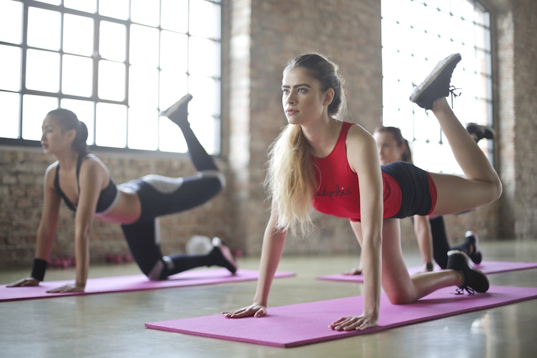
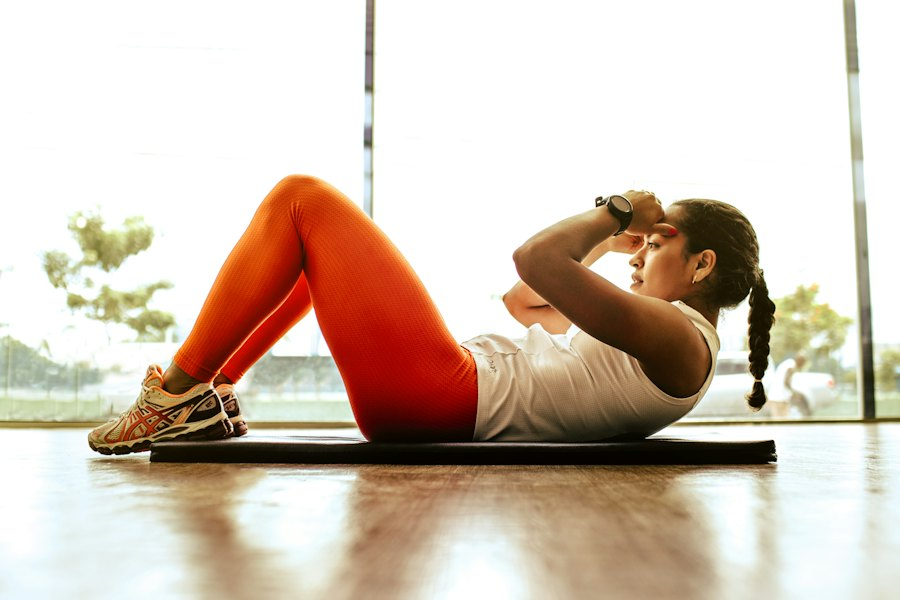
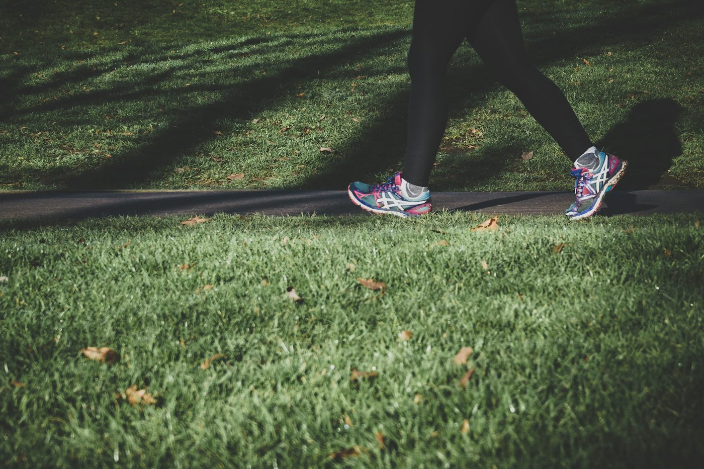
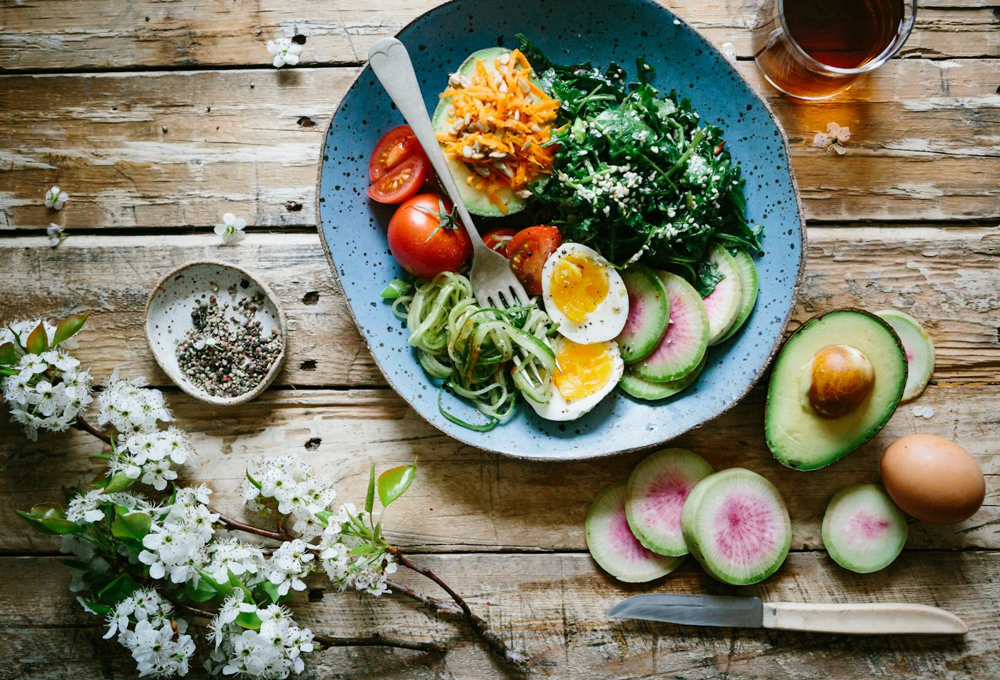
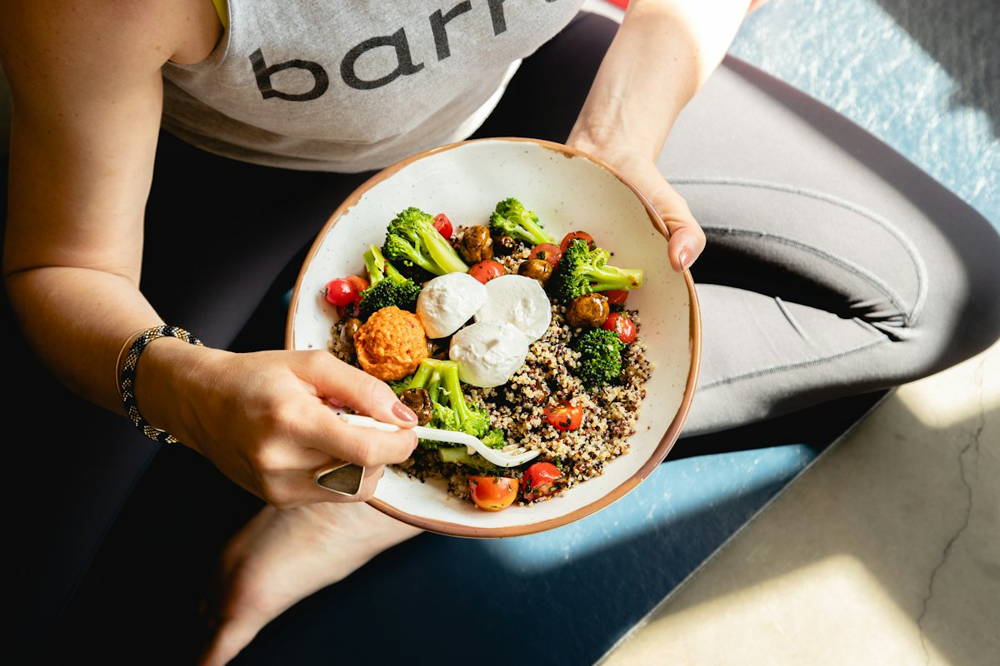
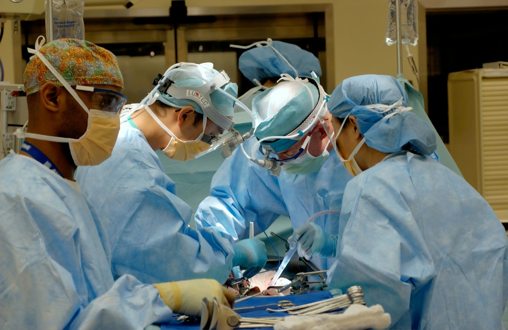
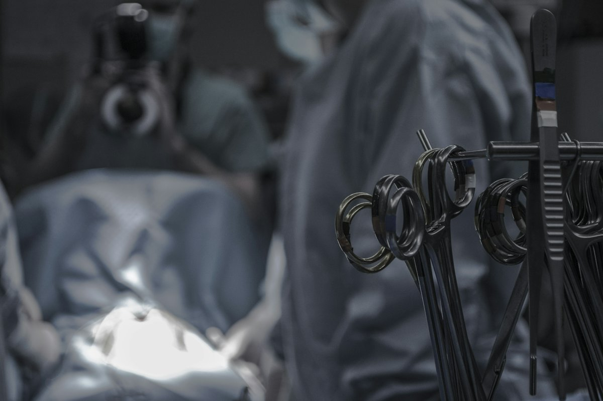

Two sets of choices for the Houston Surgical Weight Loss site: the three photographs across the
home page, and the imagery for the six procedure cards.
How to reply: just send the reference codes — for example
“A3, A6, A7 for the strip; B4 for the procedures”. Anything marked in use now is what the site
shows today, included so you can compare.
Set A — the three photographs across the home page
These sit under the headings Lighter. / Stronger. / Steady. Pick any three, in the
order you want them. They currently read as a gym advert rather than a surgical practice, which is what prompted
the change.

A1Studio workoutIn use now — under “Lighter.”A2Yoga poseIn use now — under “Stronger.”

A3Sit-upsIn use now — under “Steady.”

A4Walking outdoorsEveryday movement rather than a gym

A5Balanced mealNutrition side of the programme

A6Preparing a healthy bowlWarmer, more human than a plated shotA7Doctor and patient talkingShows the care, not the weightA8Reassuring consultationSame idea, more personalA9Walking in a parkAutumnal — may read as out of season for HoustonA10Woodland pathTall photo and quite dark — would crop tightly
Set B — imagery for the six procedure cards
The cards for Gastric Sleeve, Gastric Bypass, Gastric Balloon, Lap-Band, Revision and General Surgery
currently use simple line icons. Below are photographic options. Please read the note underneath before
choosing.
B1Surgical team, bright theatreAlready used elsewhere on the siteB2Surgeon at work, closeWarmest of the theatre shots

B3Four surgeons operatingWider view of a full teamB4ConsultationNon-clinical, less intimidating

B5Instruments in theatreDark and rather severe — included for completeness
Worth knowing before you choose. You asked for
“the actual surgery image” on each card. The honest answer is that a theatre photograph cannot tell a
sleeve apart from a bypass — they all look the same. What distinguishes them on other bariatric sites is an
anatomical diagram of the stomach for each procedure.
Those are licensed medical illustrations, not free stock, and there are two routes: buy a set (roughly
$30–$150 each from a medical illustration library), or commission one consistent set in the practice's own
colours. The second costs more but looks bespoke and nothing else online will match it.
So there are three ways to go: keep the current line icons, use one of the photographs above on
every card, or get six anatomical diagrams. Tell me which and I will set it up.